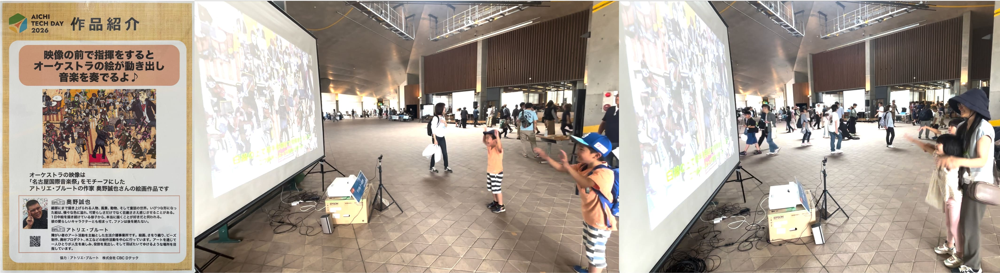
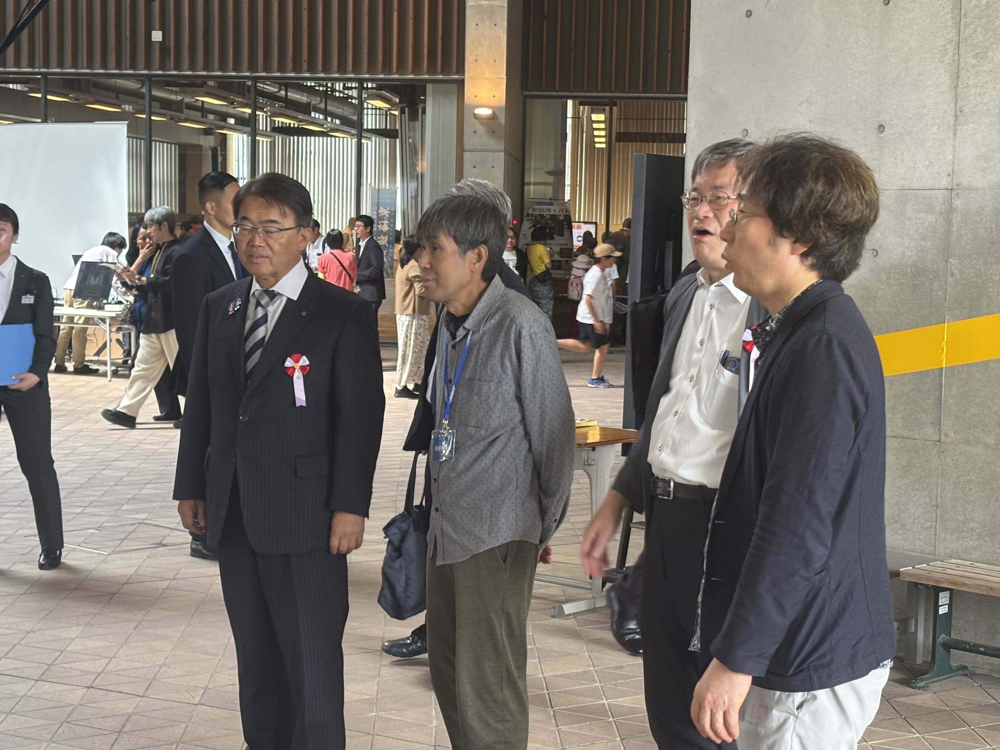

アール・ブリュット
障がい者アート × メディアアート

アート, ジェスチャ認識, インタラクション, メディアアート
使用技術
- C++ (OpenGL)
- Python (OpenCV, Ultralytics YOLOv8)
概要
家族連れが参加するスポーツイベント等では，子どもから大人まで幅広い来場者が気軽に参加でき，関心を惹きつける体験型コンテンツへの需要が高まっている．そこで本研究では，リアルとバーチャルを融合したパターゴルフコンテンツを制作した． プレイヤーは実際のパターでボールを打つことで操作を行う．その動きを検出して仮想のゴルフコース上にボールとして反映する．仮想空間には得点要素や加速ギミックを導入し，初心者や子どもでも楽しめるよう工夫した． プロゴルフ大会で展示した結果，子どもから大人まで幅広い層に好評を得た．
障がい者支援施設「アトリエ・ブルート」に所属する作家の作品を映像化
障がい者のアート活動を支援する施設「アトリエ・ブルート」に所属する作家の作品を映像化しました。 このオーケストラの映像は、名古屋市国際音楽祭をモチーフにした、アトリエ・ブルートの作家 奥野誠也さんの絵画作品です。
Aichi Tech Day 2026 への出展
作成したコンテンツは2026年5月24日に愛知県 愛・地球博記念公園地球市民交流センターで開催されたAichi Tech Day 2026にて展示を行いました。 Aichi Tech Day 2026では、子どもから大人まで幅広い年齢層の来場者が本コンテンツを体験し、楽しんでいただきました。
